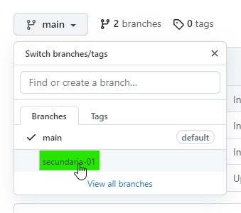

Síntese sobre Branches e Hospedagem (RDE 07)
Por: Gabriel Emanuel
Atalhos
BRANCHES
São ramificação de um projeto de software ou de um documento qualquer e tem como objetivo o de desenvolvimento paralelo de:
- novas funcionalidades
- correção de problemas
- alteração de código
Os branches são dividos em:
- Branch Master ou Main: braço principal de um projeto em um repositório
- é a versão que o usuário vai visualizar quando acessar a página
- versão estável
- Branch Secundária: braço secundário de um projeto em um repositório
- atualizações que vão ocorrendo sem que seja exibida ao usuário
- permite realizar alterações paralelas sem que haja um modificação no conteúdo principal, no branch master.
- para efetivar essas atualizações ao usuário é necessário realizar a mesclagem com o Branch Master
Acessando o nosso perfil no git hub na web, vamos acessar o PrimeiroRepositorio
Podemos notar, que o nosso repositório possui apenas 1 branch. Observe:

Observe ainda, que no lado esquerdo, possui um menuzinho escrito main. Este é o nosso braço principal do repositório, o Branch Master ou Branch Main
Visualizado isso, vamos abrir o Git Hub Desktop e vamos criar um novo repositório que se chamará primeiro_site
Lembrando que o repositório foi criado localmente, na máquina. Para disponibilizá-lo remotamente, vamos clicar em Ctrl + P ou então em Publish repository
E vamos publicar o nosso repositório: (Lembre-se sempre de desmarcar a opção "Keep this code private", para não deixar o arquivo privado.)
Acessando o nosso perfil no git hub, podemos notar que o nosso repositório foi criado!

A partir disso, vamos abrir o nosso repositório no Visual Studio Code, criar um documento HTML chamado de index.html e criar a estrutura básica do código através do atalho ! seguido de Enter.
Agora vamos commitar essas alterações e em seguida realizar o Push Origin:
Vamos realizar algumas alterações no documento HTML:
Note que ao acessar o GIT HUB Desktop, o software aponta todas as alterações que realizamos no index.html
Vamos realizar o commit e o Push Origin

Vamos considerar hipoteticamente, que este código seja o código final de um projeto. Caso queíramos, por exemplo, implementar e testar uma nova funcionalidade sem que haja interferência na página que está sendo exibida ao usuário, o mais ideal é criar uma nova branch.
Para isso, vamos ao menu superior e clicamos em Current Branch:
E agora, para criarmos uma nova branch, clicamos em New Branch
Vamos nomeá-la como secundaria-01
Após criarmos a branch, vamos publicá-la através do comando Publish Branch
Visualizando o repositório no navegador, podemos notar que agora ele consta que existem duas branchs (Imagem 01) e podemos ainda, verificar, na lista, que a branch secundaria-01 foi criada! (Imagem 02)
Imagem 01
Imagem 02
Clicando no branch, note que a estrutura dos arquivos são semelhantes a branch main o que faz nos levar a pensar que são duas pastas diferentes com cópias do arquivo.
Agora, vamos passar a trabalhar na branch secundária:
Agora, vamos abrir o repositório no Visual Studio Code. Nele, vamos adicionar o seguinte conteúdo:
Vamos realizar um commit:
Agora, vamos analisar como ficou a branch main e a branch secundária:
Após isso, vamos criar uma segunda branch secundária que se chamará secundaria-02. Nela, vamos criar um documento HTML e ir alterando algumas coisinhas. No meu caso, ficou assim:

Realize o commit e o Push Origin
Juntando os Branchs
O primeiro passo é escolher a branch que será realizado a mesclagem, neste caso, será a branch principal, a main.
Depois, vá até o menu superior, acesse a opção Branch e logo em seguida clique em Merge into current branch
Em seguida, vamos fazer o merge com o Secundario-01 e depois em Create a merge commit
O commit já está criado. Apenas falta publicá-lo!
Vamos fazer o mesmo procedimento com o Secundario-02
OPS!!Deu conflito!!
Se clicarmos para ver o conflito, temos esta tela:
Observe que a área de conflito está indicada:
Para resolver esse conflito, vamos clicar em Accept Both Changes, ou seja, Aceiitar Ambas Mudanças
Voltando para o Git Hub Desktop:
Clicamos em "Continue merge" e em seguida em "Push Origin"
Observe agora que no branch main contém todas as versões que estão em branches secundários. Para verificar, acesse o branch main e abra o arquivo index.html

Após realizarmos esse procedimento, o branches principal está atualizado com as versões dos branches secundários. Porém, cada branch secundário, não está sincronizado e igual ao principal. Dessa forma, em cada branche secundário, vamos acessar o menu "Branch" e clicar em "Update from main". Aplicar o mesmo procedimento tanto no Branch secundario-01 tanto para o Branch secundario-02
Logo após isso, não esquecer de realizar o Push Origin
É possível também, criar uma branch da branch. Até agora, criamos branches que tem como referência a branch main, o braço principal. Porém, é possível criar braços dentro dos próprios braços, como por exemplo, uma branch para a branch secundaria-02, que a chamaremos de secundaria-03
Para isso, vamos até o secundaria-02 e abrimos o menu para a criação de uma nova branch como vínhamos fazendo. Porém, note que dessa vez é possível escolher o diretório base para a nova branch. A configuração da nova branch deverá ficar assim:
Após realizar o Publich Branch, o novo branch está pronto para ser utilizado no repositório remoto.
Hospedagem
É, basicamente, o processo no qual os arquivos HTML e CSS são enviados a um servidor para que se tornem um site acessível a todos os usuários que possuam acesso a Internet
Em geral, o serviço de hospedagem é pago. Porém, o Git Hub oferece uma ferramenta gratuita, o GitHub Pages. Para fazer uso desse recurso, basta criar uma conta na plataforma e criar repositórios públicos na mesma. Assim, a URL segue o seguinte padrão:
Para hospedarmos um site no git hub e disponibilizá-lo para o acesso de usuários, vamos seguir o seguinte passo a passo:
- Acessar o repositório que será hospedado. Neste caso, usaremos o primeiro_site, que fora desenvolvido nessa aula.
- Acessar a aba de configurações (em inglês, settins).
- Desça a página até encontrar a opção: Git Hub Pages
- Clique no link disponibilizado sob o texto Chack it out here!).
- Na página carregada, selecione a branch que você gostaria que aparecesse.
- Majoritariamente, usa-se a branch main, porém, não é uma regra!
- Depois de escolher a branch, basta salvar as configurações, clicando no botão de save, logo após o campo de escolha da branch
- Note que já aparece em destaque o link da página em destaque. Basta utilizar aquele link para que outros usuários agora acesse o site!!!
- No nosso caso, o site hospedado ficou assim:
Sobre o Desenvolvedor
Aluno: Gabriel Emanuel - 3° Info Manhã
Professor e Orientador: Francis Baranoski
Vídeo Aula: Branches e Hospedagem
Instituto Federal do Paraná - Campus Irati
R. Pedro Koppe, 100 - Vila São João, Irati - PR, 84507-302